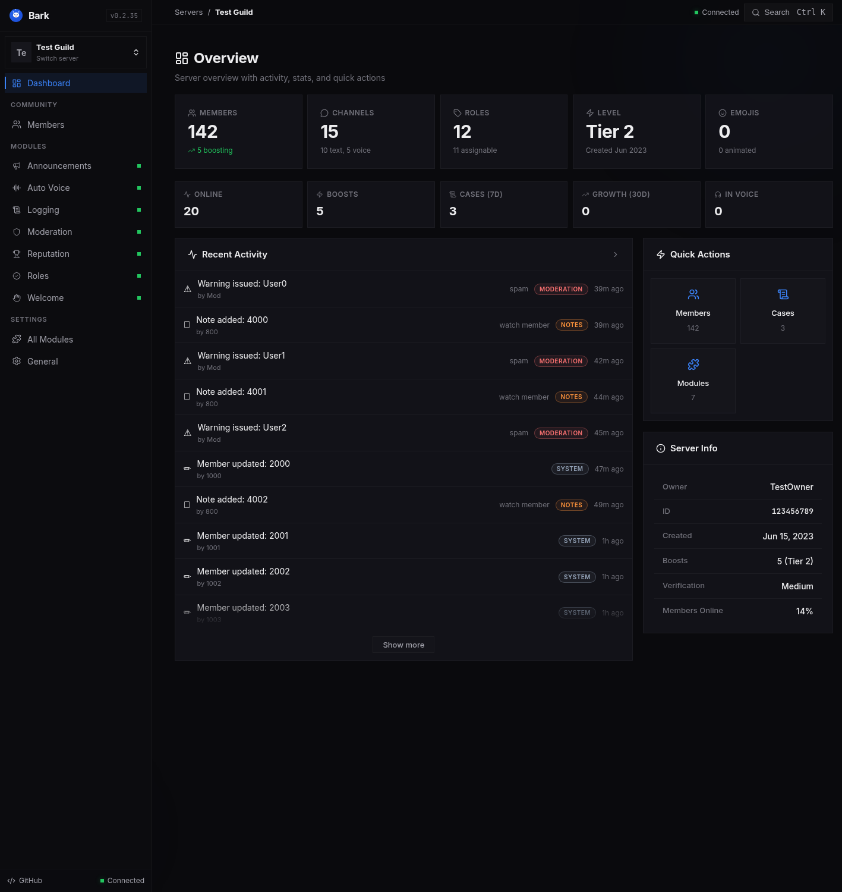

Moderation
Bark guards the yard with cases, warnings, notes, rulesets, audit history, member actions, and voice tracking.
Discord management, self-hosted
Bark is a good doggy: a Discord bot and focused dashboard for moderation, roles, reputation, voice, and automation.
Bark will protect you like man's best friend. This hosted instance is private, so an owner-issued invite is required before Bark can help watch a server you manage.
Built for operators
Bark guards the yard with cases, warnings, notes, rulesets, audit history, member actions, and voice tracking.
Good behavior earns levels, thanks, emoji and reaction scoring, named tiers, leaderboards, and rewards.
Bark takes care of the fleas on its own: role rules, temporary voice, announcements, welcomes, and logging.
Dashboard-first
Use Discord sign-in to see the servers you can administer. Configure modules, review activity, manage members, and act without leaving the browser.
Open dashboard
Your infrastructure
Bark is open source, runs as one Python application, and keeps its data on infrastructure you operate. Good dog. No cloud kennel required.
Read the documentation